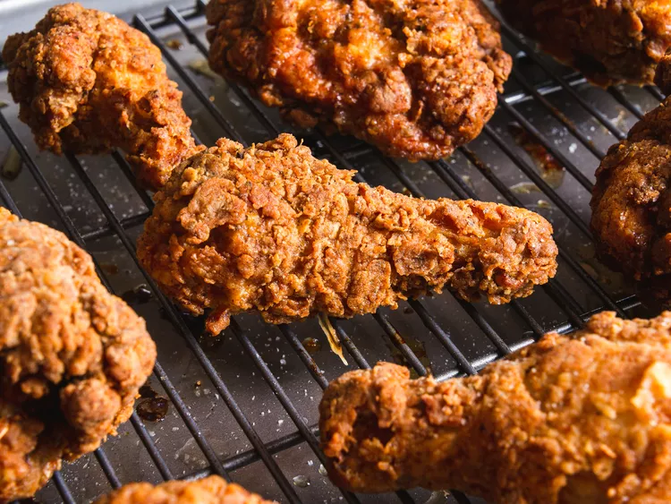

| Spice Mix | Buttermilk Brine | Chicken Preparation |
|---|---|---|
| 2 TBS Paprika | 1 cup Buttermilk | 1 Whole Chicken (10 pieces) |
| 2 TBS Black Pepper | 1 Egg | 1 1/2 cups All Purpose Flour |
| 2 tsp Garlic Powder | Salt to taste | 1/2 cup Cornstarch |
| 2 tsp Oregeno | 1 tsp Baking Powder | |
| 1/2 tsp Cayenne Pepper | 4 cups Vegetable Shortening |
1. Combine all seasonings together.
2. Whisk the buttermilk, egg, 1 tablespoon salt, and 2 tablespoons of the spice mixture in a large bowl. Add the chicken pieces and toss and turn to coat.
3. Whisk together the flour, cornstarch, baking powder, salt, and the remaining spice mixture in a large bowl. Add 3 tablespoons of the marinade from the zipper-lock bag and work it into the flour. Remove the chicken from the bag and drop the chicken into the flour mixture. Toss to coat
4. Preheat the oven to 350°F. Heat the shortening or oil to 425°F in a cast-iron pot over medium-high heat.
5. Place chicken skin-side down in the pan. The temperature should drop to 300°F. Fry the chicken until it’s a deep golden brown on the first side, about 3 minutes.
6. Transfer chicken to a clean wire rack and place in the oven. Bake until thickest part of breast pieces reaches 150°F.
7. Once cooled, serve and enjoy! :)
Recipe Courtesy of Serious Eats